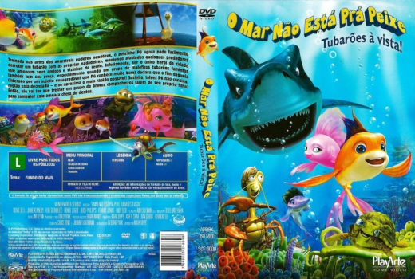

Outro Título:The Reef 2: High Tide
País:United States, 80 minutos
Idiomas falados:Inglês, Português
Gênero(s):Animação, Família
Diretor(s):Mark A.Z. Dippé, Taedong Park
Escritor(es):Chris Denk, Johnny Hartmann
Codec:MPEG-2 (DVD)
Número: 5856

Certificado:
Sinopse:
Após ser derrotado por Pi (Drake Bell), o tubarão Troy (Donal Logue) foi capturado por humanos, que o mantém prisioneiro em uma jaula submarina. Eles injetam em Troy diversas substâncias, que fazem com que ele fique maior e mais forte do que nunca. Um dia, o pequeno tubarão Ronny (Jamie Kennedy) o encontra e acaba libertando-o. Troy logo parte para o recife onde Pi vive, em busca de vingança, mas a maré baixa impede o ataque. Entretanto, como a maré subirá em quatro dias, Troy e seus capangas tubarões resolvem aguardar até invadir o local. Enquanto isso, Pi precisa encontrar um meio de defender sua família e amigos. Para tanto ele tenta convencê-los de que apenas com muito treinamento é possível derrotar Troy e sua turma.
Elenco:
Tipo de mídia: DVD5,
Legendas: Português, Sem Legendas
Alugado: Não
Tela: Anamorphic Widescreen